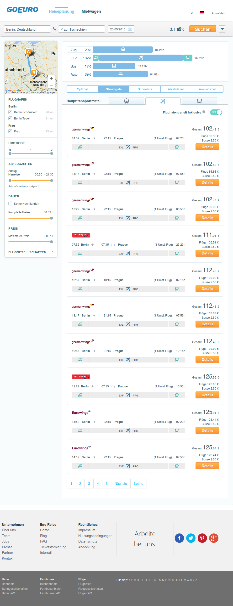
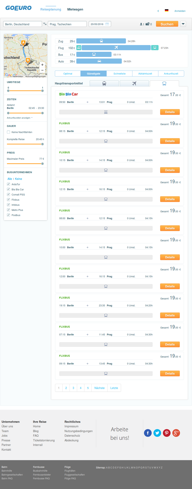

| Scenario: 1. Cheapest first sorting of Train results |
|
| Passed: 4 | Failed: 0 | Undefined: 0 | Duration: 45.56s |
| Before | | 2.96s |
|
| Given I search for route from "Berlin, Deutschland" to "Prag, Tschechien" on "20" of next month | 40.18s | | When I sort by cheapest price | 1.04s | | And I select results for "train" | 0.33s | | Then I should see a price sorted options with cheapest first | 0.74s | |
|
| After | | 0.31s |
|
| Back to Table of Contents |
| Scenario: 2. Cheapest first sorting of Flight results |
|
| Passed: 4 | Failed: 0 | Undefined: 0 | Duration: 12.16s |
| Before | | 0.02s |
|
| Given I search for route from "Berlin, Deutschland" to "Prag, Tschechien" on "20" of next month | 10.31s | | When I sort by cheapest price | 0.49s | | And I select results for "flight" | 0.30s | | Then I should see a price sorted options with cheapest first | 0.68s | |  |
|
| After | | 0.36s |
|
| Back to Table of Contents |
| Scenario: 3. Cheapest first sorting of Bus results |
|
| Passed: 4 | Failed: 0 | Undefined: 0 | Duration: 19.12s |
| Before | | 0.06s |
|
| Given I search for route from "Berlin, Deutschland" to "Prag, Tschechien" on "20" of next month | 17.12s | | When I sort by cheapest price | 0.63s | | And I select results for "bus" | 0.31s | | Then I should see a price sorted options with cheapest first | 0.69s | |  |
|
| After | | 0.30s |
|
| Back to Table of Contents |